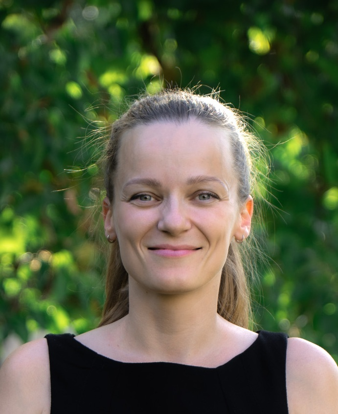
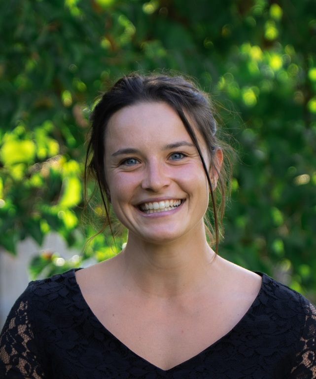

Komunální volby • Bučovice
Volte číslo 4
9-10.října 2026
Nová energie
pro moderní město
Jsme Mladí Bučováci – hnutí nezávislých kandidátů s chutí podílet se na budoucnosti Bučovic
01 / Program
Náš plán
pro lepší město
Férová pravidla pro stavbu nemovitostí
Chceme, aby v Bučovicích platila férová a srozumitelná pravidla pro všechny, kteří chtějí stavět.
02Bezpečné pěší cesty napříč Bučovicemi
Chceme město propojit se všemi městskými částmi pomocí pěších a cyklistických tras.
03Smysluplné odpadové hospodářství
Stavíme se za možnost občanů zvolit si způsob třídění odpadu, který jim nejlépe vyhovuje.
04Spolehlivá hromadná doprava
Zajistíme přidání autobusových linek navazujících na večerní vlaky.
05Podpora dostupného bydlení
Chceme, aby město výrazně rozšířilo obecní bytový fond.
06Oživení centra Bučovic
Chceme podpořit malé podniky v centru města, jako jsou například kavárny a rychlá občerstvení.
07Revitalizace kultury v Bučovicích
Chceme, aby Bučovice nabízely dostatek možností pro trávení volného času.
02 / Kandidáti
Společně s Vámi
tvoříme budoucnost Bučovic
Ing. Dominik Řičánek
Vysokoškolský učitel • Vědec

Ing. Mgr. Ivana Oliva Koudelková
Statik
Tomáš Masař
Pracovník SAKO Brno
Ing. et Ing. arch. Vojtěch Koudelka
Stavební manažer • Urbanista

Marie Holíčková
Studentka veteriny
Bc. Karel Kučera
Zvukař
Martin Lutišan
Specialista v oblasti tool-managementu
03 / Kontakt
Máte otázku?
Napište nám.
Chceme slyšet, co se v Bučovicích daří a co bychom měli změnit.